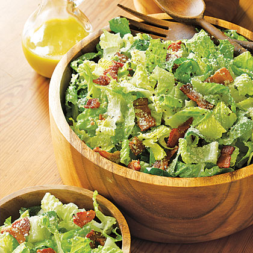

Bacon Caesar Salad

Description
Add bacon to a traditional Caesar salad recipe for extra flavor and
crunch.
Ingredients
- 6 ounces thick-cut bacon (6 to 8 slices), cut into pieces
- 2 flat anchovy fillets, finely chopped
- 1 garlic clove, finely chopped
- 2 teaspoons fresh lemon juice
- 2 teaspoons red wine vinegar
- ½ teaspoon Dijon mustard
- ½ teaspoon Worcestershire sauce
- ½ cup extra-virgin olive oil
-
2 heads romaine, quartered lengthwise, cut crosswise into 1/2-inch
strips
- 1 ½ cups freshly grated Parmesan
Steps
-
Cook bacon in a medium skillet over medium-high heat, stirring
occasionally, until crisp, 7 to 8 minutes. Use a slotted spoon to
transfer to a plate lined with paper towels. (Bacon can be cooked,
cooled and covered 6 hours ahead.)
-
Mix anchovies, garlic, lemon juice, red wine vinegar, mustard and
Worcestershire sauce in a blender. Add olive oil and blend until smooth.
(Dressing can be refrigerated in an airtight container for up to 3 days.
Bring to room temperature before using.)
-
Combine lettuce and bacon in a large bowl, drizzle with dressing and
toss to coat. Add cheese and toss again. Serve immediately, sprinkled
with croutons if desired.